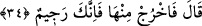

hakîkatleri itmi’nân ve varlığını ihsân hâlindedir. Bu sebeple matlûbunun varlığına
ulaştığı için dâimâ sâkin, sükûnet hâlinde, sessiz ve sükût hâlindedir. Böylece görünüşte
en aşağıda olsa da en yüce mertebeye ermiştir. Arzın kalbinden çıkan rızâ ile kâim
olmuştur. Onun makamı rızâ, hâli teslimiyet, dîni ise İslâm’dır.” Hz. Şeyh’in sözündeki
sırra şâirin şu sözü de işâret ediyor:
Aras nehri sahrâda coşar
Deryâya ulaşınca susar
Sâib’in şu sözü de aynı mâhiyettedir:
Âşıklara fenâya kadar sevinç ve gamdan kurtuluş yoktur
Deryâya varana kadar sel bazen alçaktan bazen yüksekten akar
34. Allah şöyle buyurdu: “Öyle ise oradan çık! Artık kovuldun!”
Allah Teâlâ, tıpkı “Defol! dedi.” (Tâhâ, 20/97) emrinde olduğu gibi kovma ve hakîr
görme emriyle “şöyle buyurdu: “Öyle ise oradan” cennetten “çık!” Cennetten
kovulması, oraya vesvese yoluyla girmesine ters düşmez. Yine göklerden kovulması,
mukarreb melekler zümresinden, yaratılmış olduğu meleklere âid sûret ve sıfatlardan da
çıkmasını gerektirmiştir. Nitekim kovulan ve öfkelenilenlerin durumu böyle olur. O
yaratılışı ile övünürdü. Allah onun yaratılışını değiştiriverdi. Bembeyaz bir varlık iken
siyahlaştı. Çok güzelken çirkinleşti. Nûrâni iken zulmânî oldu.
Ebü’l-Kasım Ensârî der ki: “Allah Teâlâ melekler, cinler ve insanları sûret ve
şekilleri bakımından birbirlerinden farklı yaratmıştır. Şâyed bir meleği hem zâhirî hem
de bâtınî bakımdan bir insanın bünyesine çevirecek olsa, o melek melek olmaktan
çıkmış olur. Diğerlerini de buna kıyâs et.”
“Artık kovuldun!” “Racîm” kelimesi, taşla recm etmekten, yâni taş atmaktan gelir. Bu
da kovmaktan kinâyedir. Çünkü kovulan kimsenin ardından taş atılır. Yâni, sen Allah’ın
rahmetinden, her tür hayır ve lütuftan kovuldun, demektir.
Ya da “racîm” kelimesi, parlak ateş şûleleriyle kovulmaktan gelir. Bu da onun bir
şeytan olduğundan kinâyedir. Yâni, sen parlak ateş şûleleriyle kovalanan
şeytanlardansın, demektir. Bu ifâde, İblis’in şüphesine verilmiş bir cevaptır. Çünkü
nassa kıyasla karşı çıkan kimse, kovulur ve lânete uğrar.